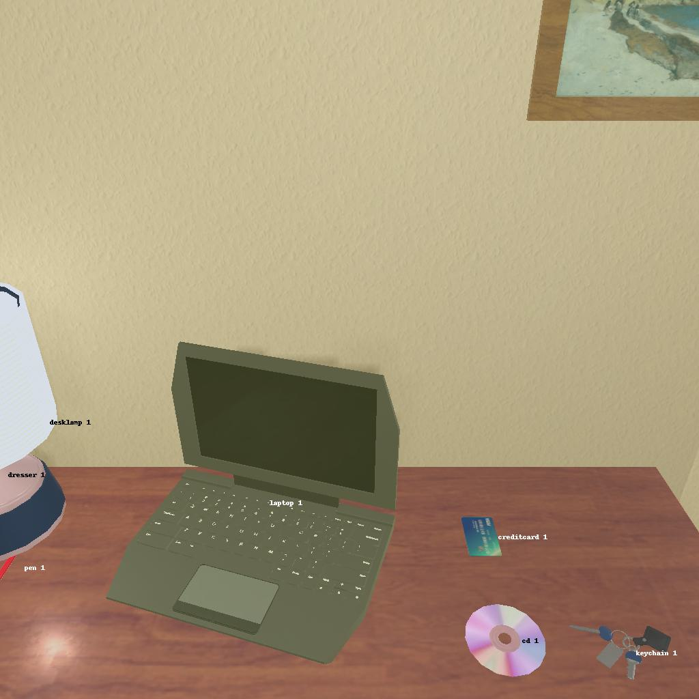

---------------------------------------------------------task: 1---------------------------------------------------------
--------------------------------------------------------------------------------------------------------------------------------------------------------------------
--------------------------------------------------------------------------------------------------------------------------------------------------------------------
Step:--------------------------------------------------------------------------6-------------------------------------------------------------------------------
----------------------------------------
VLM Prompt:
Image1:
Image2:
**Instruction**
1. Analyze the provided image to identify all visible household objects, focusing on those relevant to the task description "examine the alarmclock with the desklamp."
2. Use the analysis of the image and the task hint "The agent must find an object of the desired type, locate and turn on a light source with the desired object in-hand." to answer the question: what is the most reasonable action in the choices for the task description "examine the alarmclock with the desklamp"?
4. Decide and write the answer using the template: The answer is: (i): , where i is the real number. If there is no desired object in the image, search every place based on **Initial Observation** to find the object. And if no one is exactly correct, choose a similar answer.
**Initial Observation**
You are in the middle of a room. Looking quickly around you, you can see bed (1), dresser (1), drawer (1-10), garbagecan (1), shelf (1-7)
**Answer Choices**
(1): go to bed 1
(2): go to drawer 1
(3): go to drawer 2
(4): go to drawer 3
(5): go to drawer 4
(6): go to drawer 5
(7): go to garbagecan 1
(8): go to drawer 6
(9): go to drawer 7
(10): go to drawer 8
(11): go to drawer 9
(12): go to drawer 10
(13): go to shelf 1
(14): go to shelf 2
(15): go to shelf 3
(16): go to shelf 4
(17): go to shelf 5
(18): go to shelf 6
(19): go to shelf 7
(20): take laptop 1 from dresser 1
(21): take cd 1 from dresser 1
(22): take keychain 1 from dresser 1
(23): take creditcard 1 from dresser 1
(24): take pen 1 from dresser 1
(25): examine dresser 1
**Answer**
Let's think step by step by following the instructions.
----------------------------------------
----------------------------------------
Original Response:
The task description is "examine the alarmclock with the desklamp." However, upon analyzing the image, there is no alarm clock visible on the dresser or nearby areas, and the desklamp is also not turned on.
Given the task hint, the agent must find the alarm clock and then locate and turn on the desklamp to examine the alarm clock.
In the **Initial Observation**, there is no mention of an alarm clock being in sight; thus, the agent needs to search for it. Since the alarm clock is usually found in the bedroom area, it might be placed on the bed, dresser, or inside a drawer.
Since the dresser is already visible in the image and there is no alarm clock on it, the next reasonable action would be to check the drawers. Starting from drawer 1 would be the most systematic approach.
The answer is: (2): go to drawer 1.
----------------------------------------
----------------------------------------
>>> Refine Original VLM Response and Get Pure Action: go to drawer 1
----------------------------------------
-----------------------------------------------------------------
Running time: 11.468468189239502 seconds
Total Money: 0.41295
-----------------------------------------------------------------
-----------------------------------------------------------------
Text Observation:You arrive at loc 2. The drawer 1 is closed.
-----------------------------------------------------------------
UNSUCCEED